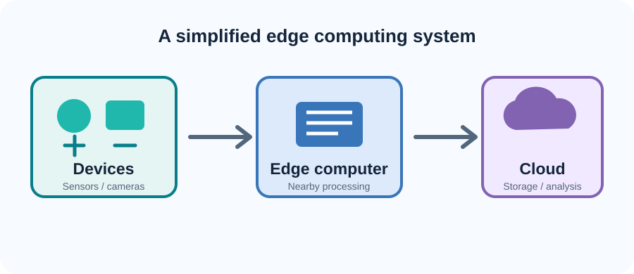
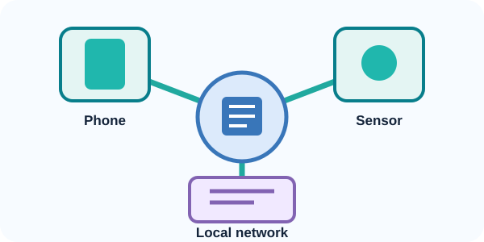

Faster responses
Processing nearby can reduce the time data spends travelling across a network.
Computing closer to where data is created
AN EMERGING AREA OF COMPUTER SCIENCE
Edge computing processes data near the device that creates it instead of sending everything to a distant data centre first.
Explore how it works
Edge computing is a way of organizing computer systems so that some data processing happens close to the source of the data. The "edge" can be a device, a local server, or another nearby computer.
Instead of sending every piece of information to a far-away cloud server, a system can analyze some information locally and send only what is needed.
Processing nearby can reduce the time data spends travelling across a network.
Devices can filter or summarize information before sending it elsewhere.
Some tasks can continue locally even if the connection to a central cloud service is temporarily unavailable.
Edge computing does not replace cloud computing. A system can use edge devices for quick, local decisions and cloud services for long-term storage and larger-scale analysis.
See real-world applications →